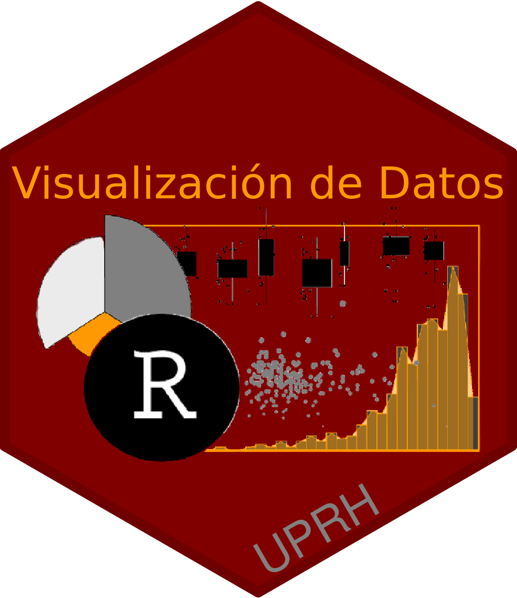

Visualización de Datos


```{r include=FALSE, message=FALSE}library(tidyverse)library(gridExtra)library(gt)library(random)library(ggplot2)
# ¿Qué es la visualización de datos?
La visualización de datos tiene como objetivo facilitar la apreciación de datos y determinar si existen patrones. Naturalmente, no se necesitan gráficos para entender ciertas ideas. Por ejemplo, si un estudiante tiene 25 años y otra estudiante tiene 20 años, no hay que crear un gráfico para entender que hay 5 años de diferencia entre una y el otro. Así que producimos gráficos típicamente cuando hay muchos datos y hay posible solapamiento entre los valores. Si, por ejemplo, nos informan que la edad de los estudiantes en un salón de preescolares es de cerca de 5 años y los de primer año universitario es de 19 años, es fácil percibir la diferencia entre esos grupos. Pero, por otro lado, si se describen las edades de los estudiantes de dos salones en la misma universidad, pudiese haber solapamiento entre las edades. Entonces, el determinar si la edad de esos dos grupos de estudiantes es igual o es diferente ya no es tan evidente. Veamos un ejemplo. Si uno lista las edades de estudiantes universitarios de dos salones, tendremos el reto de intentar discernir si sus edades son aproximadamente iguales o diferentes solo al mirar la lista. ¿Será posible? A ver, intenta explicar cuál es la diferencia (si existe alguna) en las edades de las dos listas siguientes.Edades del salón 1:{r echo=FALSE, warning=FALSE}set.seed(654875)Edad_Salón_1=randomNumbers(100, min=20, max=27, col=1)Edad_Salón_1=as.data.frame(Edad_Salón_1)Edad_Salón_1=as.list(Edad_Salón_1)Edad_Salón_1****Edades del salón 2:{r echo=FALSE}set.seed(654875)Edad_Salón_2=randomNumbers(100, min=20, max=26, col=1)Edad_Salón_2=as.data.frame(Edad_Salón_2)Edad_Salón_2=as.list(Edad_Salón_2)Edad_Salón_2Probablemente notes que no es evidente a primera vista cuál es la diferencia entre las dos listas de datos. Necesitamos ayuda para visualizar la diferencia. A continuación se explican un par de maneras de ver esa misma información.## Resumir la información en tablasUna alternativa razonable para discernir la diferencia entre las edades de los dos grupos de estudiantes listadas arriba es resumir los datos en una tabla; o sea, por grupos, Salón 1 y Salón 2. Al mirar la Tabla: Edad de los Estudiantes podemos apreciar que hay muy poca diferencia entre los promedios de las edades, pero también podemos ver que la edad máxima de los estudiantes es diferente.En conclusión, con este simple ejercicio podemos afirmar que las dos listas de edades tienen valores muy similares, pero que hay otras características (por ejemplo, el valor máximo) que los hace diferentes. También podemos reconocer que si hay muchos valores en una lista, típicamente los humanos no podemos entender esos patrones a simple vista. Por lo tanto, es importante recurrir a diversos métodos para resumir los datos de forma más concisa, efectiva y eficiente, tal como lo demostraremos próximamente.{r include=FALSE}Edad_Salón_1$Seq=seq(1:100)Edad_Salón_2$Seq=seq(1:100)df=bind_rows(Edad_Salón_1, Edad_Salón_2)df$Salón=rep(c("Salón_1","Salón_2"), each=100)df``````{r include=FALSE, warning=FALSE}as_tibble(df)``````{r , warning=FALSE, message=FALSE}# para disparar tabla:df%>% select(V1, Salón)%>% group_by(Salón)%>% summarize(promedio=mean(V1), mínima=min(V1), máxima=max(V1))%>% gt()%>% tab_header( title = "Tabla: Edad de los Estudiantes")## Cómo visualizar muchos datosLlegar a conclusiones prematuras sobre las edades de los estudiantes simplemente con echarle un vistazo rápido nos podría conducir a un error. Una mejor alternativa es visualizar las listas de datos con un gráfico. En ese caso, podemos visualizar esos datos con un gráfico llamado Diagrama de caja o Boxplot, tal como se muestra en Figura: Diagrama de Caja. Se observa que el promedio es aproximadamente igual, que ambos muestran valores mínimos idénticos, y que entonces la única diferencia es el valor máximo en los datos. Esa conclusión se pudo alcanzar simplemente produciendo un gráfico. Esa es la importancia de visualizar los datos antes de llegar a conclusiones.{r, fig.cap='Figura: Diagrama de Caja'}# para producir un diagrama de caja:ggplot(df, aes(y=V1, x=Salón))+ geom_boxplot() + ylab("Edad de los estudiantes")# La representación gráfica en la historiaEn esta sección se presentan unos ejemplos históricos de visualización gráfica. Esta sección no es exhaustiva y su presentación tiene como objetivo mostrar la evolución y desarrollo de la representación gráfica.## 1. Campaña de NapoleónCharles Joseph Minard (1781-1870; Francia) es una de las personas que contribuyó al desarrollo del tema que hoy día se conoce como gráficas informativas (o Information Graphics en inglés). Él se reconoce por sus innovaciones al utilizar gráficos para demostrar patrones. El gráfico más famoso creado por este señor fue sobre la campaña de guerra de Napoleón para invadir a Rusia (1812-1813), explicado a continuación. En la ilustración Mapa: Campaña de Napoleón podemos apreciar el movimiento de la campaña de Napoleón para invadir a Rusia. El movimiento de ida está representado con la cantidad de hombres que comenzaron el camino hacia Rusia hasta Moscú representado por la barra de color marrón, y el viaje de regreso representado con la barra de color negro. El ancho de cada barra representa la cantidad de hombres presentes en el ejercicio militar. Los datos históricos comprueban que cuando comenzaron la campaña militar (saliendo de París) eran más de 422 mil soldados, al llegar a Moscú ya eran solamente 100 mil soldados, y cuando finalmente regresaron a París, luego de haber intentado infructuosamente de conquistar a Rusia, Napoleón tenía solamente 10 mil soldados con él. Observemos el gráfico debajo de las barras. Este representa la temperatura al regresar de Moscú. Se puede observar que a la vez que bajaba la temperatura, más y más de los soldados fallecían. Podemos concluir, entonces, que la mortandad en gran parte se debió a no estar preparados para el frío. Vale hacer notar que la escala de temperatura en aquel entonces no era de Celcios ni de Farenheit. La escala ilustrada se llama Réaumus, que presentaba un punto de congelación y de ebullición de 0° y 80° respectivamente. Esa escala se usó en múltiples países de Europa hasta mediados del Siglo XIX.{r echo=FALSE, out.width = '80%', fig.align='center', fig.cap='Mapa: Campaña de Napoleón'}knitr::include_graphics("Graficos/Carte_Napoleon.png")## 2. Origen de la carne de ParísOtro ejemplo gráfico de Minard es la Figura: Origen de la carne de París. Este representa la procedencia de la carne que la gente en París consumían en el S XIX. El color negro representa carne de res, el color verde era de la ternera y el color rojo era de la de cordero. Vemos que ya Minard hacía uso de gráficos de pastel o torta (o pie chart en inglés) para identificar la proporción de cada grupo y el tamaño del pastel para identificar la cantidad relativa en comparación con los otros departamentos o dependencias políticas locales.{r echo=FALSE, out.width = '70%', fig.align='center', fig.cap='Figura: Origen de la carne de París'}knitr::include_graphics("Graficos/Minard_Carne_Paris.png")*## 3. Gráfico de CoxcombEl conflicto de Crimea del 1853 al 1856 fue una de las primeras guerras donde se comenzó a contabilizar la causa de muerte de los soldados. Esta guerra se debió al conflicto entre Rusia y sus aliados por un lado y por otro lado al Imperio Otomano, Francia, Reino Unido y Sardeñia (este último hoy día es parte de Italia). Al comienzo, la causa de la guerra fue por asegurar el acceso de los cristianos a la Tierra Santa en Palestina. Lo que es interesante de esta guerra con relación a la evolución de la representación gráfica de la información es el impacto que tuvo una enfermera de nombre Florence Nightingale (1820-1910) del Reino Unido. No solo esta señora tuvo una influencia muy importante sobre el desarrollo de las buenas prácticas de la ciencia de la Enfermería, también tuvo un impacto en la forma como se visualizan las causas principales de la mortandad durante una guerra. A continuación una ilustración de Nightingale.{r echo=FALSE, fig.cap='Florence Nightingale, pionera de la Ciencia de la Enfermería', out.width = '40%', fig.align='center'}knitr::include_graphics("Graficos/Florence_Nightingale.png")Como enfermera en las campos militares, Nightingale se percató que la gran mayoría de los soldados morían no por la guerra en sí, pero por la pobre calidad de sanidad en los campos de guerra. Para tratar de convencer a los políticos para que aportaran más recursos para mejorar las condiciones de salud de sus soldados, ella recolectó datos y produjo unos gráficos para describir las causas de mortandad del conflicto de Crimea. Uno que tuvo un impacto importante está representado en la Figura: Causas de muerte en la Guerra de Crimea (1853-1856). Este tipo de representación hoy día se le conoce como Gráfico de Coxcomb**.En dicho gráfico, Nightingale muestra las causas de mortandad de los soldados en diferentes meses del año. El color gris representa la cantidad de soldados muertos por enfermedades no relacionadas a la batalla, el color verduzco representa los soldados que murieron por otras razones (no por estar en batalla ni por enfermedades), y el color anaranjado representa los que murieron por estar en batalla. Con este gráfico ella claramente demostró que la causa principal de mortandad no era el campo de batalla, si no por las enfermedades que nada tenían que ver con al campo de batalla. Morían por las pobres condiciones de salubridad que a su vez fomentaban las enfermedades que traían como consecuencia un alto nivel de mortandad. Como resultado de ese gráfico, se hicieron unos cambios en las condiciones de salud de los soldados que trajeron consecuentemente la reducción de la mortandad.{r echo=FALSE, out.width = '60%', fig.align='center', fig.cap='Figura: Causas de muerte en la Guerra de Crimea (1853-1856)'}knitr::include_graphics("Graficos/coxcombchart.png")``````{r eval=FALSE, include=FALSE}#Aquí se reconstruye el gráfico con herramientas modernas. Los datos provienen de la página de Wikipedia **Crimean War**.Pais=c("Imperio Otamano", "Imperio Otamano","Francia","Francia", "Reino Unido","Reino Unido", "Cerdeña","Cerdeña", "Rusia y aliados","Rusia y aliados")Fatalidad=c("En acción", "Otras enfermedades", "En acción", "Otras enfermedades" ,"En acción", "Otras enfermedades", "En acción", "Otras enfermedades", "En acción", "Otras enfermedades")Num_soldados=c(20900, 24500, 20240, 75375, 4602, 17580, 28, 2138, 41000,89000)Coxcomb=data.frame(Pais, Fatalidad, Num_soldados)Coxcomb``````{r eval=FALSE, include=FALSE}ggplot(Coxcomb, aes(x=Pais, y=Num_soldados))+ geom_bar(aes(fill=País, stat="identity", width = 1))+ coord_polar(theta = "y")``````{r eval=FALSE, include=FALSE}night <- read.csv("./Nightinggale.csv") ## load datanight <- subset( ## subsetting the data for the demonstration night, Month >= 185404 & Month <= 185503)night <- within(night, { Month <- factor(Month, ## define x-axis labels levels = c( 185404, 185405, 185406, 185407, 185408, 185409, 185410, 185411, 185412, 185501, 185502, 185503, 185504, 185505, 185506, 185507, 185508, 185509, 185510, 185511, 185512, 185601, 185602, 185603 ), labels = c( "April 1854", "May 1854", "June 1854", "July 1854", "August 1854", "September 1854", "October 1854", "November 1854", "December 1854", "January 1855", "February 1855", "March 1855", "April 1855", "May 1855", "June 1855", "July 1855", "August 1855", "September 1855", "October 1855", "November 1855", "December 1855", "January 1856", "February 1856", "March 1856" ) ) rDis <- sqrt((1000*ZymDis/AvgArmSiz)/pi)## radius disease rWnd <- sqrt((1000*WndInj/AvgArmSiz)/pi) ## radius wounds rOth <- sqrt((1000*Other/AvgArmSiz)/pi) ## radius others })## --- Plot coxcombe ---------------------------------------library(ggplot2)library(reshape)md.night <- melt( ## transform data for ggplot2 night, id.vars = c("Month"), measure.vars = c("rOth", "rWnd", "rDis"))detach(package:reshape)md.night <- within(md.night, { ## factor for fill layers fill <- ifelse(variable == "rDis", 1, NA) fill <- ifelse(variable == "rOth", 2, fill) fill <- ifelse(variable == "rWnd", 3, fill) fill <- factor(fill, levels = c(1:3), labels = c( ## define legend keys "Preventable or mitigable zymotic diseases", "Other causes", "Wounds" ) ) })colours <- c("#599ad3", "#727272", "#f1595f") # fill palette## ---p <- ggplot( ## define ggplot2 object md.night, aes(x = Month, y = value, fill = fill, order = fill))p + geom_bar( ## bar chart options stat = "identity", ## already mapped a value to y position = "identity", ## begin each segment at 0 width = 1, ## flush bars ) + labs( ## labels x = "", y = "", fill = "Causes of Mortality", title = "Diagram of the Causes of Mortality in the Army in The East \n April 1854 to March 1855", ## \n start new line ) + scale_fill_manual( ## manually assign colours to fill values = colours ) + theme_bw(base_size = 12) + theme( ## finishing touches to the theme axis.text.y = element_blank(), axis.ticks.y = element_blank(), panel.border = element_blank(), panel.grid = element_blank(), legend.position = "bottom", legend.direction = "horizontal" ) + coord_polar(theta = "x", start = 11) ## transform to 'pie'